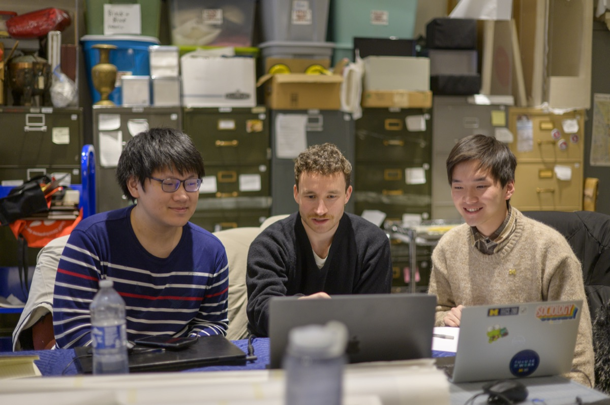

Navigating Your Active Project
Tools for tracking progress, gathering feedback, and keeping your partner informed while your project is underway.

Why the Middle of a Project Matters
The middle of an engaged learning project is where much of the learning happens, and where real challenges show up. Real-world projects rarely follow a straight line. Requirements shift, team dynamics change, partners face unexpected constraints, and research produces surprising results.
Working through these moments builds resilience, adaptability, and ethical decision-making. That includes handling "scope creep" (when a project grows beyond what you and your partner originally agreed to), responding to feedback mid-project, and adjusting technical decisions to fit real human needs.
Treat these challenges as a normal part of applied learning. They are how you build the problem-solving skills that information careers ask for.
Managing Your Project
Conducting research, tracking progress, and maintaining clear communication with project sponsors.
What You Will Do in This Phase
- Fieldwork and Research Methods: Apply human-centered design tools to observe contexts and extract insights.
- Sponsor and Client Updates: Maintain transparency with regular progress reporting.
- Feedback Loops: Gather, evaluate, and integrate constructive feedback mid-project.
Featured Resources and Handouts
| Category | Resource | Purpose |
|---|---|---|
| Observation & Needfinding | HFLI - AEIOU Worksheet for Observations | Framework to categorize field observations (Activities, Environments, Interactions, Objects, Users). |
| User Research | HFLI User-Needs-Insights Worksheet | Translates raw interview and observation data into actionable design insights. |
| Feedback Management | HFLI Feedback Worksheet | Structures mid-point feedback cycles between students, instructors, and partners. |
| Case Analysis | Ginsberg Center - Community Engagement Cases Handout | Practical scenarios illustrating ethical dilemmas and resolution strategies. |
| Sponsor Tracking | Sponsor Dashboard Template - Organizational Excellence | High-level status dashboard to keep external clients informed on project health. |
| Communications Plan | Student Project Communications Plan Example & Template | Establishes meeting cadences, channels, and response windows for teams. |
| Workflow Tracking | Project Management Worksheet (Google Doc) | Hands-on tool for breaking down project goals into milestones and task assignments. |
What Comes Next
When your project is ready to close, continue to Wrap-Up, Impact & Next Steps.
Need help? Email umsi.engagement@umich.edu.